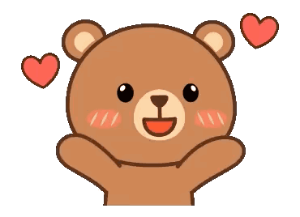

You make my heart smile in ways words can’t explain. Say yes and make
this Valentine unforgettable 🥰

I Knew It 😍💘
You just made my heart yours forever. Endless hugs, kisses & love coming
your way 💞
My heart feels so full right now. I love you, and I am so excited for
our future.